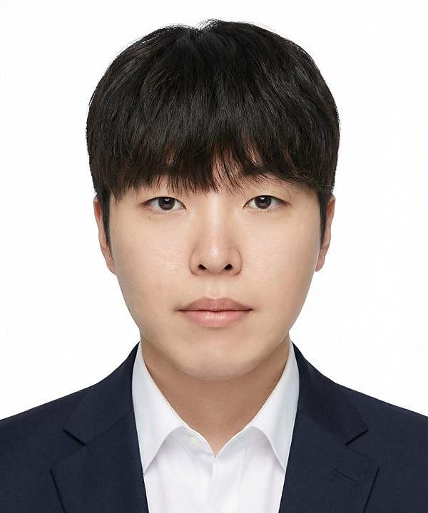

강의 분야 기관 수요에 맞춰 조합해 편성합니다
AREA 01
ComfyUI 전문 과정
산업 표준 노드 기반 AI 제작 도구를 입문부터 상업 프로젝트 적용까지 Basic → Intermediate → Advanced 단계로. 원격 GPU 실습 환경을 직접 설계 · 운영합니다.
AREA 02
일반 AI 활용 · AX
AI 기초부터 브랜딩 · 숏폼 · 영화 제작까지 난이도별 4단계. EBS 전 임직원 연수 등 기업 · 기관 맞춤 AI 전환(AX) 교육을 설계합니다.
AREA 03
바이브코딩
코딩 경험이 없어도 AI 코딩 도구로 실제 동작하는 제작 자동화 도구를 만들어 배포합니다. 기획 · 제작 · 행정 직군 대상 실무 교육.
AREA 04
AI VFX
실사 촬영본에 AI 생성 요소를 합성해 광고 · 뮤직비디오급 VFX 컷을 완성합니다. Seedance · Veo 등 최신 영상 모델을 실전 투입.
AREA 05
3D × AI · 실감미디어
Blender · Unity로 구도와 카메라를 통제하고 AI로 화면을 완성하는 3D 파이프라인. 3DGS 공간 AI · 미디어월 · 시뮬레이터 등 실감형 콘텐츠.
AREA 06
웹툰 애니화 · AI 콘텐츠
웹툰 IP를 숏폼 애니메이션으로 확장합니다. 캐릭터 일관성 제어부터 연출 · 납품까지 전 과정을 다루는 End-to-End 강의.
AREA 07
미디어아트
TouchDesigner 기반 인터랙티브 미디어아트 제작. 산업 종사자 실무 워크샵과 기업 연수를 진행합니다.
강의 이력 2020–2026 · 방송사 · 대학 · 공공기관
| 연도 | 기관 | 내용 |
|---|---|---|
| 2026 | EBS | 바이브코딩 역량향상 강의 · 주강사 — 방송제작기획부 대상 8주 과정 |
| 2026 | 경희대학교 | 디지털콘텐츠학과 · 외래교수 — ComfyUI · 어드밴스드 애니메이션 (2학기) |
| 2026 | 목원대학교 | 외래교수 — 디지털이미지아트워크숍 2 |
| 2026 | MBN 「K-미디어 부트캠프」 | 부산 · 세종 ComfyUI 교육 강사 — 미디어 실무자 대상 AI 제작 워크플로우 |
| 2026 | 공주대학교 | AI 헤리티지 콘텐츠 양성과정 — ComfyUI 기반 문화유산 × 생성형 AI 실습 |
| 2026 | 괴산군 · 중원대학교 | AI 콘텐츠 창작자 양성과정 · 주강사 — 기획부터 제작까지 실무 전담 |
| 2025 | EBS | 전사 임직원 AI 연수 — 부서별 특화 시나리오 기반 영상 제작 연수 약 4개월 |
| 2025 | 동아방송예술대학교 (DIMA) | 미디어방송학과 특강 — Foundation → Intermediate → Advanced → Capstone |
강의 이력 12건 더 보기
| 연도 | 기관 | 내용 |
|---|---|---|
| 2026 | 디지털헤리티지 큐레이터 양성과정 2기 | ComfyUI 기반 AI 후처리 강의 |
| 2026 | 디지털미디어산업진흥협회 | 매력일자리양성사업 — 디지털미디어 콘텐츠 기획자 양성 과정 |
| 2026 | 디피코어 | 미디어아트 기업 연수 — TouchDesigner 기반 실무 연수 |
| 2026 | 홍익대학교 대학원 | AI · 실감미디어콘텐츠학과 특강 — 현장 R&D와 학문 연구의 접목 |
| 2026 | 편입학원 이드 | 생성형 AI 워크숍 · 진로코칭 — 약 80명 대상 |
| 2025 | G 아티언스 2025 (대전) | AI 영상 디렉터 양성과정 — End-to-End 실무 강의 |
| 2025 | 대전시청자미디어센터 · 대전정보문화산업진흥원 | AI 영상 디렉터 양성 전담 강의 |
| 2025 | KMAIA (한국미디어아트산업협회) | AI 툴 활용 미디어아트 제작 워크샵 — 산업 종사자 대상 |
| 2024 | 컴패노이드랩스 HCI 칼리지 | UX · 인터랙션 중심 인재양성 강의 |
| 2023 | 고려대학교 T-Sum | 파이썬 학생 연수 강의 — 기초부터 실무 활용까지 |
| 2022 | 고려대학교 유나이티드 메타버스학회 | Unity 기반 메타버스 · 실감형 콘텐츠 제작 강의 |
| 2020~2023 | 주식회사 플러스위드 | 디지털새싹 등 초 · 중등 SW · AI 교육 사업 강사 |
주요 프로젝트 기획부터 납품까지 총괄한 실적
국가 · 국제 행사
- APEC 2025 경주 K Wave Playground — 초대형 스크린용 특수비율 AI 콘텐츠 기획부터 납품까지 총괄
- 국가유산청 × 유네스코 30주년 「지금, 우리의 유산을 걷다」 — 종묘 · 해인사 · 불국사 AI × 3D 헤리티지 콘텐츠 총괄
- 지식재산처 · 한국발명진흥회 지역 IP 투자 네트워킹데이 오프닝 영상 기획 · 제작 총괄
방송 · TV
- EBS AI 한국사 — 역사 고증 기반 AI 아동 역사 애니메이션 기획 · 제작 · AI 연출 기술 리드
- KBS 역사스페셜 — 역사 다큐 AI 재현 콘텐츠 · 고증 기반 비주얼 구현
- CNTV 〈IF : 미완의 예술〉 3부작 — 광복 80주년 특집, 연출 · 기술 총괄 및 AI 복원 전문가 인터뷰 출연
- KCA 코리안데스크 · EBS 지구영웅 번개맨 2 — 범죄현장 재구성 AI 영상 · 방송용 AI 특수효과
실감형 · 공간 미디어
- 안양시 스마트도시 통합센터 6축 시뮬레이터 콘텐츠 3종 기획 · 제작 총괄
- 전곡선사박물관 미디어월 — 인물 · 도구 · 의복 고증 기반 선사시대 비주얼 총괄
- 광주광역시 「빛의 도시 광주」 도시 미디어월 뮤직비디오 기획 · 제작 총괄
AI 영상 · 공모전
- 경북 국제 AI · 메타버스 영상 공모전 — AI 뮤직비디오 「꽹」 연출 · 제작 총괄, 종합대상
- Alibaba 주관 Wan Muse 국제 AI 공모전 — 자사 AI 제어 기술 활용 출품 · 연출 기법 검증
기술 · 특허 가르치는 내용을 직접 만들어 씁니다
| 영역 | 기술 · 플랫폼 | 특허 · IP | 핵심 기여 |
|---|---|---|---|
| 자체 제작 환경 | AIMZ SandBox (Unity 기반) | 특허 출원 2건 · 저작권 등록 2건 | All-in-One 3D AI 제작 환경 직접 설계 · 개발. 생성형 AI 기반 3D 모델 자동 생성과 실시간 엔진 연동, 다중 가상 카메라 캡처 시스템. |
| 공간 AI | 3DGS · RePerspective · WorldExtend | 특허 출원 2건 · 저작권 등록 1건 | 360° 단일 이미지로 전방향 3D 공간 생성. 3DGS 관심영역 추출과 생성형 AI 연동 자동 배치, XR 아나모픽 영상 검증. |
| AI × VFX | AI 합성 · 애니메이션 · Deepfake 워크플로우 | 특허 출원 1건 · 저작권 등록 1건 | 후반 공정을 AI 키잉 기반으로 단축하는 합성 체계. 분산 워커 큐 기반 작업 오케스트레이션과 출력신호 동기화. |
| 기업용 AI | 엔터프라이즈 AI 플랫폼 (온프레미스 · 프라이빗 클라우드) | 독자 플랫폼 · B2B | 기업 · 기관 보안과 데이터 환경에 맞춘 오더메이드 구축. 폐쇄망 LLM · RBAC · 멀티모달 엔진. |
| AI 교육 플랫폼 | AIMZ EDU | 독자 플랫폼 · SaaS | GPU 할당 실습 환경 · LMS · 프롬프트 가드레일 기반 교육 플랫폼 설계. 4단계 커리큘럼 운영. |
| AI 브랜드 솔루션 | Aimeyes | 등록 상표 · 독자 솔루션 | 브랜드 목표와 고객 니즈의 교차점을 데이터로 겨냥하는 AI 브랜드 가이드 설계. |
학술 · 수상
2026 · ICCC 국제학술대회 (한국콘텐츠학회) · 타이완
AI-Based Dramatic Science Filmmaking : A Case Study of the CODE Series
Best Presentation Paper Award 최우수상
2026 · ICCC 국제학술대회 (한국콘텐츠학회) · 타이완
Consistency Optimization Method for 3D-Driven Generative AI Content
3D 기반 생성형 AI 콘텐츠 일관성 최적화 연구
2026 · 한국공간디자인학회 · 하북미술대학 국제학술대회
생성형 AI 기반 3D 가우시안 스플래팅 결손 공간 복원 사례
논문 발표
2023 · 콘텐츠 유니버스 코리아
콘텐츠 테크 해커톤
최우수상
학력 · 경력
EDUCATION
- 재학 중 — 홍익대학교 AI · 실감미디어콘텐츠학 석사과정
- 2018 ~ 2024 — 고려대학교 디지털경영 · 졸업
- 2024 — 뉴콘텐츠 아카데미 (한국콘텐츠진흥원) · 수료
- 2023 — 메타버스 아카데미 (과학기술정보통신부) · 수료
EXPERIENCE
- 2025.03 ~ 현재 — ㈜에임즈미디어 — 콘텐츠 엔지니어링센터 센터장
AI 필름 프로덕션 시스템 설계 · 구축 총괄 · 5개 기술 사업부 리드 - 2024.01 ~ 2025.02 — SF49.STUDIO — Technical Artist
생성형 AI 콘텐츠 워크플로우 R&D · ComfyUI · Python · Unity 파이프라인 설계 - 2024.01 ~ 2025.02 — 컴패노이드랩스 — UX Research · R&D · PM
실감형 콘텐츠 UX 연구과제 · UX 인재양성 프로그램 PM - 2020 ~ 2023.12 — 주식회사 플러스위드 — 영상콘텐츠 · 코딩 강사
영상 기획 · 편집 · 모션그래픽 · 메이킹 · 코딩 교육 - 2021.09 ~ 2023.03 — 경기지방중소벤처기업청 — 창업벤처과
창업 관련 정책 수행 및 벤처 지원 행정
교육 일정을 잡아볼까요?
1일 과정부터 한 학기 운영까지, 기관 사정에 맞춰 편성합니다.